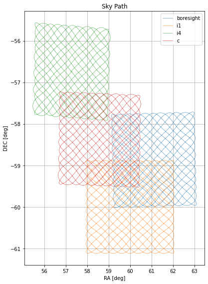
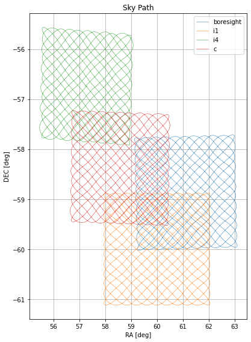

Visualization
Camera Modules and Instruments
Below are a list of visualization functions and examples and examples for visualzing camera modules and instruments.
- scanning.visualization.plot_module(mod, mode=None, path=None, show_plot=True)[source]
Plot the pixel positions and default polarizations of a given module.
- Parameters
mod (Module) – A Module object.
mode (str or None, default None) – None for just the pixel positions. ‘pol’ to include default orientations. ‘rhomubs’ to include rhombus info. ‘wafer’ to include wafer info.
path (str or None, default None) – If not None, saves the image to the file path.
show_plot (bool, default True) – Whether to display the resulting figure.

- scanning.visualization.instrument_config(instrument, path=None, show_plot=True)[source]
Save a plot of the instrument configuration.
- Parameters
instrument (Instrument) – An Instrument object.
path (str or None, default None) – If not None, saves the image to the file path.
show_plot (bool, default True) – Whether to display the resulting figure.
{kind=link}
Scan Patterns
Below are a list of visualization functions and examples for visualzing scan patterns.
- scanning.visualization.sky_path(pattern, module=None, path=None, show_plot=True)[source]
Trace the path of the pattern on the sky.
- Parameters
pattern (SkyPattern or TelescopePattern) – If SkyPattern object, trace the path in x and y offsets. If TelescopePattern object, trace the path in RA/DEC.
module (str or two-tuple or [list of str or two-tuple] or None, default None) – Only applicable if pattern is TelescopePattern. Trace the paths of the listed modules/location. If None, use boresight. | 1. string indicating a module name in the instrument e.g. ‘SFH’ | 2. string indicating one of the default slots in the instrument e.g. ‘c’, ‘i1’ | 3. tuple of (distance, theta) indicating module’s offset from the center of the instrument, default unit deg
path (str or None, default None) – If not None, saves the image to the file path.
show_plot (bool, default True) – Whether to display the resulting figure.

 

{kind=link}
- scanning.visualization.telescope_path(telescope_pattern, module=None, path=None, show_plot=True)[source]
Trace the path of the pattern in AZ/EL.
- Parameters
pattern (TelescopePattern) – A TelescopePattern object.
module (str or two-tuple or [list of str or two-tuple] or None, default None) – Trace the paths of the listed modules/location. If None, use boresight. | 1. string indicating a module name in the instrument e.g. ‘SFH’ | 2. string indicating one of the default slots in the instrument e.g. ‘c’, ‘i1’ | 3. tuple of (distance, theta) indicating module’s offset from the center of the instrument, default unit deg
path (str or None, default None) – If not None, saves the image to the file path.
show_plot (bool, default True) – Whether to display the resulting figure.
{kind=link}
- scanning.visualization.telescope_kinematics(telescope_pattern, module=None, plots=['coord', 'vel', 'acc', 'jerk'], path=None, show_plot=True)[source]
Plot time vs. azimuthal and elevation kinematics.
- Parameters
pattern (TelescopePattern) – A TelescopePattern object.
module (str or two-tuple or None, default None) – Select the module to use. If None, use boresight, otherwise: | 1. string indicating a module name in the instrument e.g. ‘SFH’ | 2. string indicating one of the default slots in the instrument e.g. ‘c’, ‘i1’ | 3. tuple of (distance, theta) indicating module’s offset from the center of the instrument, default unit deg
plots (list of str, default ['coord', 'vel', 'acc', 'jerk']) – List of which time plots to include. By default, includes all.
path (str or None, default None) – If not None, saves the image to the file path.
show_plot (bool, default True) – Whether to display the resulting figure.
{kind=link}
- scanning.visualization.sky_kinematics(pattern, module=None, plots=['coord', 'vel', 'acc', 'jerk'], path=None, show_plot=True)[source]
Plot time vs. x and y kinematics.
- Parameters
pattern (SkyPattern or TelescopePattern) – A SkyPattern or TelescopePattern object.
module (str or two-tuple or None, default None) – Select the module to use. If None, use boresight, otherwise: | 1. string indicating a module name in the instrument e.g. ‘SFH’ | 2. string indicating one of the default slots in the instrument e.g. ‘c’, ‘i1’ | 3. tuple of (distance, theta) indicating module’s offset from the center of the instrument, default unit deg
plots (list of str, default ['coord', 'vel', 'acc', 'jerk']) – List of which time plots to include. By default, includes all.
path (str or None, default None) – If not None, saves the image to the file path.
show_plot (bool, default True) – Whether to display the resulting figure.
{kind=link}
Simulations
Below are a list of visualization functions and examples for visualzing simulation outputs.
- scanning.visualization.hitmap(sim, convolve=True, norm_time=False, kept_hits=True, removed_hits=False, total_hits=False, path=None, show_plot=True, with_rot0=True)[source]
Get a hitmap.
- Parameters
sim (Simulation) – A simulation object.
convolve (bool; default True) – Whether to convolve the hitmap.
norm_time (bool; default False) – True for hits/px per total scan duration. False for hits/px.
total_hits (kept_hits removed_hits) – Whether to plot seperate hitmaps for kept/rem/total hits (True) or not (Fal`se). If an integer is passed, the corresponding plot will show, with the color bar maximum set to this interger.
with_rot0 (bool; default True) – Include initial field rotation into side plot of detector elements.
path (str or None; default None) – If not None, saves the image to the file path.
show_plot (bool; default True) – Whether to display the resulting figure.

- scanning.visualization.pxan_detector(sim, norm_pxan=True, norm_time=False, kept_hits=True, removed_hits=False, total_hits=False, path=None, show_plot=True)[source]
Get a hitmap of the number of hits per detector element on a pixel on the sky (specified in pxan_list or pxan_lim).
- Parameters
sim (Simulation) – A simulation object.
norm_pxan (bool; default True) – Whether to average the hits by dividing the total hits by the number of pixels.
norm_time (bool; default False) – True for hits/px per total scan duration. False for hits/px.
total_hits (kept_hits removed_hits) – Whether to plot seperate hitmaps for kept/rem/total hits (True) or not (Fal`se). If an integer is passed, the corresponding plot will show, with the color bar maximum set to this interger.
path (str or None; default None) – If not None, saves the image to the file path.
show_plot (bool; default True) – Whether to display the resulting figure.

- scanning.visualization.pxan_time(sim, bin=1, norm_pxan=True, norm_time=False, kept_hits=True, removed_hits=False, total_hits=False, path=None, show_plot=True)[source]
Get a histogram of the number of hits per timestamp on a pixel on the sky (specified in pxan_list or pxan_lim).
- Parameters
sim (Simulation) – A simulation object.
bin (float, Quantity, or str; default 1, default unit seconds) – Desired time bin.
norm_pxan (bool; default True) – Whether to average the hits by dividing the total hits by the number of pixels.
norm_time (bool; default False) – True for hits/px per total scan duration. False for hits/px.
total_hits (kept_hits removed_hits) – Whether to plot seperate hitmaps for kept/rem/total hits (True) or not (Fal`se).
path (str or None; default None) – If not None, saves the image to the file path.
show_plot (bool; default True) – Whether to display the resulting figure.
{kind=link}
- scanning.visualization.pxan_polarization(sim, norm_pxan=True, norm_time=False, kept_hits=True, removed_hits=False, total_hits=False, path=None, show_plot=True)[source]
Get a histogram of how many times each detector element, grouped by their initial pixel positions, hit that region
- Parameters
sim (Simulation) – A simulation object.
norm_pxan (bool; default True) – Whether to average the hits by dividing the total hits by the number of pixels.
norm_time (bool; default False) – True for hits/px per total scan duration. False for hits/px.
total_hits (kept_hits removed_hits) – Whether to plot seperate hitmaps for kept/rem/total hits (True) or not (Fal`se).
path (str or None; default None) – If not None, saves the image to the file path.
show_plot (bool; default True) – Whether to display the resulting figure.

- scanning.visualization.polarization_histogram(sim, kept_hits=True, removed_hits=False, total_hits=False, stacked=False, path=None, show_plot=True)[source]
- Get a histogram of which polarization geometries have been captured.
Parameters
- simSimulation
A simulation object.
- kept_hits removed_hits total_hitsbool; default True False False respectively
Whether to plot seperate hitmaps for kept/rem/total hits (True) or not (False`).
- stackedbool; default False
Whether to display histogram as stacked bars (True) or overlaying bars (False).
- pathstr or None; default None
If not None, saves the image to the file path.
- show_plotbool; default True
Whether to display the resulting figure.

Observations
Below are a list of visualization functions and examples for visualzing Observation objects.
- scanning.visualization.filter_observation(obs, plot='elevation', min_elev=30, max_elev=75, min_rot_rate=0, path=None, show_plot=True)[source]
TODO
{kind=link}
- scanning.visualization.field_rotation_hist(obs, min_elev=30, max_elev=75, min_rot_rate=0, path=None, show_plot=True)[source]
TODO